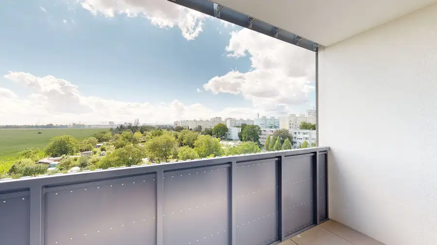
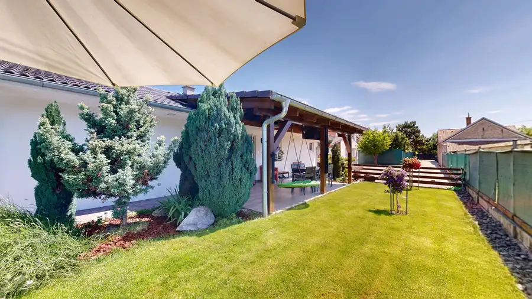
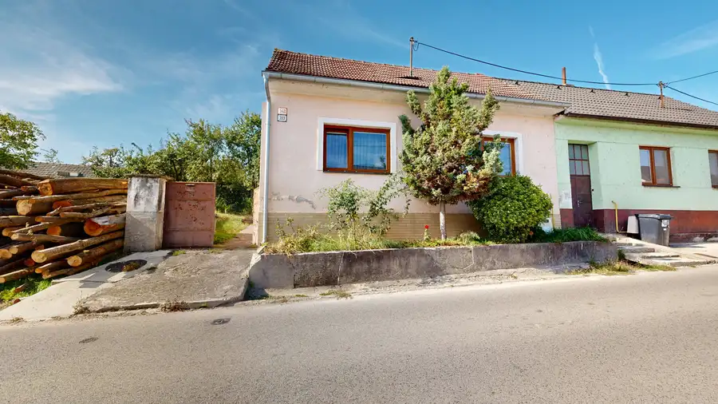
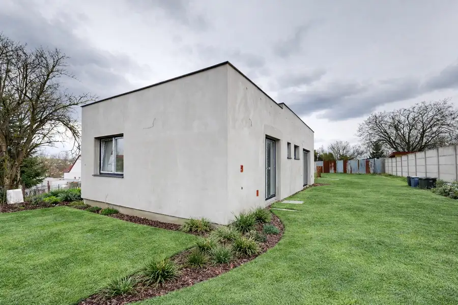
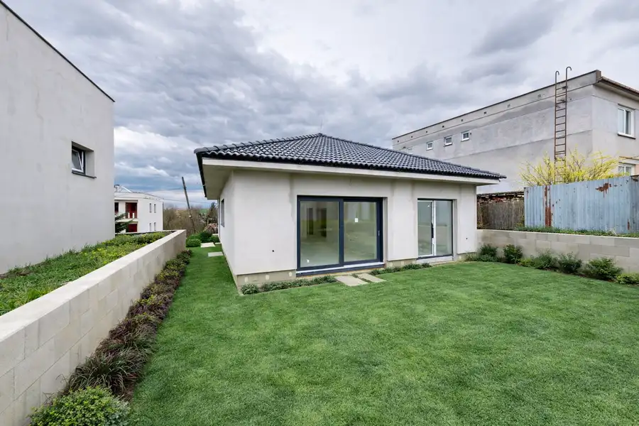
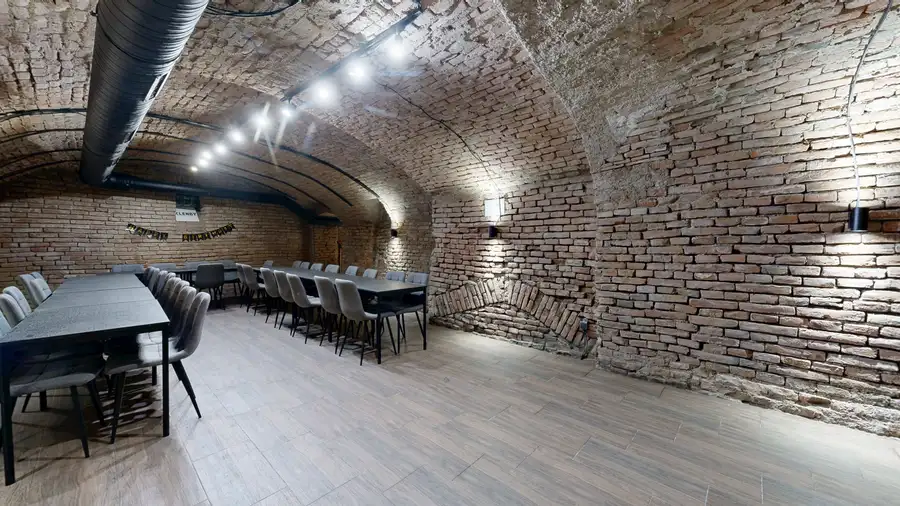
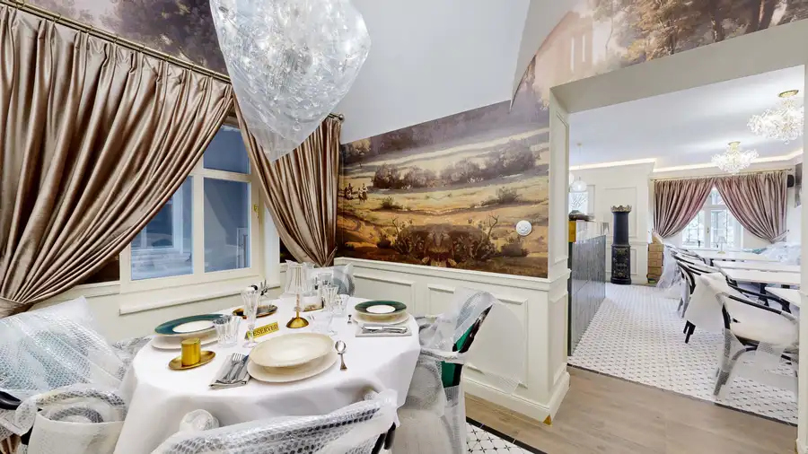
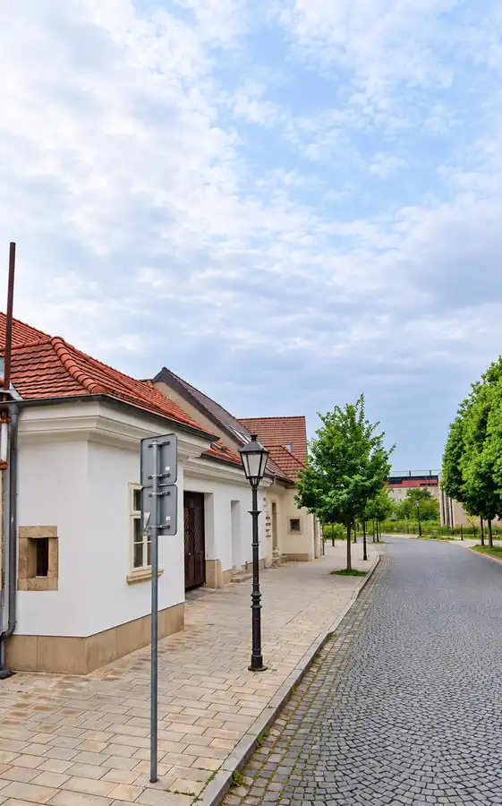

Aktuálna ponuka
Nehnuteľnosti, ktoré ponúkam
12 nehnuteľností na predaj a prenájom. Vyberte typ, alebo napíšte lokalitu.
12 z 12 ponúk
 PozemokNové6
79 900 €Predaj - stavebné pozemky v obci Dlhá
Dlhá
459 m²
Ponúkame na predaj stavebné pozemky v obci Dlhá, okres Trnava, vhodné na výstavbu rodinných domov. Na výber sú pozemky s výmerou od 459 m² do 596 m²,…
PozemokNové6
79 900 €Predaj - stavebné pozemky v obci Dlhá
Dlhá
459 m²
Ponúkame na predaj stavebné pozemky v obci Dlhá, okres Trnava, vhodné na výstavbu rodinných domov. Na výber sú pozemky s výmerou od 459 m² do 596 m²,…
 BytNové10
215 000 €Nový 2-izbový byt s kompletným zariadením – Prúdy, Včelárska ulica, Trnava
Trnava
2-izbový51.21 m²
Ponúkame na predaj úplne nový, doposiaľ neobývaný 2-izbový byt v modernom rezidenčnom projekte Prúdy na Včelárskej ulici v Trnave.Dispozícia:Byt…
BytNové10
215 000 €Nový 2-izbový byt s kompletným zariadením – Prúdy, Včelárska ulica, Trnava
Trnava
2-izbový51.21 m²
Ponúkame na predaj úplne nový, doposiaľ neobývaný 2-izbový byt v modernom rezidenčnom projekte Prúdy na Včelárskej ulici v Trnave.Dispozícia:Byt…
 Dom10
395 000 €2-izbový rodinný dom po rekonštrukcii s krásnou záhradou a altánkom v Trnave – kopánka
Trnava
1 m²
2-IZBOVÝ RODINNÝ DOM PO REKONŠTRUKCII S KRÁSNOU ZÁHRADOU A ALTÁNKOM V TRNAVE – KOPÁNKACena: 395 000 €Ponúkame na predaj útulný 2-izbový rodinný dom…
Dom10
395 000 €2-izbový rodinný dom po rekonštrukcii s krásnou záhradou a altánkom v Trnave – kopánka
Trnava
1 m²
2-IZBOVÝ RODINNÝ DOM PO REKONŠTRUKCII S KRÁSNOU ZÁHRADOU A ALTÁNKOM V TRNAVE – KOPÁNKACena: 395 000 €Ponúkame na predaj útulný 2-izbový rodinný dom…

Byt10 235 000 €Moderný 2-izbový byt s parkovaním a panoramatickým výhľadom – Púpavy pri Aleji, ul. Gen. Goliana Trnava 2-izbový65.19 m² Možný odpočet DPHHľadáte moderné bývanie v novostavbe, kde sa namiesto do okien susedov budete pozerať do prírody? Ponúkame na predaj slnečný, ešte…
Dom10 295 000 €Bývajte spolu, ale každý vo svojom – dva samostatné domy na pozemku 1 025 m Slovenská Nová Ves 93.1 m² Ponúkame na predaj zaujímavú nehnuteľnosť v obci Slovenská Nová Ves, pozostávajúcu z dvoch samostatných domov na pozemku s výmerou 1 025 m².…
Dom10 105 000 €Predaj rodinného domu – Chtelnica Chtelnica 83.8 m² Ponúkame na predaj 2-izbový rodinný dom vo výmere 83,8 m2 v obci Chtelnica na pozemku s výmerou 298 m. Dom je postavený z pálenej tehly.Vybavenie a…
Dom10 303 000 €Moderná 4-izbová novostavba rodinného domu Suchá nad Parnou 113.54 m² Na predaj moderná 4-izbová novostavba rodinného domu v obci Suchá nad Parnou, len pár minút od Trnavy.Dom je situovaný na pozemku s výmerou 527,16 m²…
Dom10 303 000 €Na predaj samostatne stojaci 4-izbový rodinný dom v obci Suchá nad Parnou Suchá nad Parnou 108.15 m² Ponúkame na predaj 4-izbový rodinný dom v obci Suchá nad Parnou, nachádzajúci sa v pokojnej časti.Dom je riešený ako samostatne stojaci bungalov s…
Komerčné priestoryNové10 Cena dohodouHistorická pivnica na prenájom v centre Trnavy – Halenárska ulica Trnava 123 m² Ponúkame na prenájom jedinečný historický pivničný priestor s celkovou výmerou 123 m², situovaný priamo v centre Trnavy na vyhľadávanej Halenárskej…
Komerčné priestory10 Cena dohodouExkluzívny prenájom reštaurácie – historické priestory s charakterom Trnava 88 m² Ponúkame na prenájom výnimočný gastro priestor s výmerou 88 m², situovaný v historickej budove. Priestor spája autentickú atmosféru histórie s…
Komerčné priestory 220 000 €NA PREDAJ obchodný priestor v centre Trnavy - Halenárska ulica Trnava 64 m² Ponúkame na predaj obchodný priestor na Halenárskej ulici v historickom centre Trnavy. Priestor s výmerou 64 m² sa nachádza na úrovni ulice a… Komerčné priestory
320 000 €PREDAJ obchodné priestory v centre Trnavy na ul. Halenárska
Trnava
205 m²
Ponúkame na predaj obchodné priestory v atraktívnej lokalite historického centra Trnavy, na Halenárskej ulici. Nehnuteľnosť pozostáva z dvoch…
Komerčné priestory
320 000 €PREDAJ obchodné priestory v centre Trnavy na ul. Halenárska
Trnava
205 m²
Ponúkame na predaj obchodné priestory v atraktívnej lokalite historického centra Trnavy, na Halenárskej ulici. Nehnuteľnosť pozostáva z dvoch…
Tomuto výberu zatiaľ nezodpovedá žiadna ponuka. Napíšte mi, čo hľadáte.